This case study tutorial demonstrates computational literary stylistics in R, covering stylometric analysis, authorship attribution, the measurement and comparison of literary style, and the visualisation of stylistic features across authors and texts. It is aimed at researchers in digital humanities and literary studies who want to apply computational methods to questions of style and authorship.
Author
Martin Schweinberger
Published
2026
Great Court, The University of Queensland
Introduction
Computational literary stylistics (also digital literary stylistics) applies computational and linguistic methods to the analysis of literary language, with the goal of discovering patterns across texts that would be difficult or impossible to detect by traditional close reading alone. It has strong links to distant reading — the analysis of large collections of literary data to reveal structural, thematic, and stylistic patterns at scale.
This tutorial showcases a broad range of methods that are commonly used in computational literary stylistics, from concordancing and keyword analysis to stylometric authorship attribution and character network visualisation. The tutorial uses six canonical literary texts downloaded from Project Gutenberg as running examples throughout, so all code is immediately reproducible. A highly recommended companion resource is Silge, Robinson, and Robinson (2017) (available at tidytextmining.com); the present tutorial substantially expands that work in terms of the range of methods covered and the integration with quanteda.
Prerequisite Tutorials
Before working through this tutorial, we suggest you familiarise yourself with:
Download and prepare literary texts from Project Gutenberg for computational analysis
Extract keyword-in-context (KWIC) concordances for words and phrases
Calculate tf-idf scores to identify terms characteristic of individual texts
Fit and visualise word-frequency distributions and verify Zipf’s Law
Measure lexical diversity (TTR) and average sentence length across texts
Assess textual similarity using hierarchical clustering and dendrograms
Track sentiment arcs across the narrative timeline of a text
Perform stylometric authorship attribution using Burrows’s Delta and PCA
Profile part-of-speech distributions across authors
Extract and visualise collocations and n-grams
Calculate and compare readability scores (Flesch Reading Ease, Gunning Fog)
Visualise character co-occurrence networks from dramatic texts
Citation
Martin Schweinberger. 2026. Computational Literary Stylistics with R. The Language Technology and Data Analysis Laboratory (LADAL), The University of Queensland, Australia. url: https://ladal.edu.au/tutorials/litsty/litsty.html (Version 3.1.1). doi: 10.5281/zenodo.19332904.
Setup
Installing Packages
Code
# Run once — comment out after installationinstall.packages("tidytext")install.packages("tidyverse")install.packages("quanteda")install.packages("quanteda.textstats")install.packages("quanteda.textplots")install.packages("forcats")install.packages("tibble") # tibble() constructor (part of tidyverse)install.packages("flextable")install.packages("lexRankr")install.packages("udpipe") # POS tagginginstall.packages("stylo") # stylometric analysis (Delta, PCA)install.packages("koRpus") # readability scoresinstall.packages("koRpus.lang.en")install.packages("sylcount") # syllable counting (Flesch)install.packages("ggrepel") # non-overlapping plot labelsinstall.packages("ggdendro") # dendrogram ggplot2 layer
What you will learn: How to download literary texts directly from Project Gutenberg using plain-text URLs and combine them into a single analysis-ready data frame
Texts used throughout this tutorial:
Author
Work
Gutenberg ID
Genre
William Shakespeare
Romeo and Juliet
2261
Drama
Charles Darwin
On the Origin of Species
1228
Non-fiction
Mark Twain
The Adventures of Tom Sawyer
74
Novel
Edgar Allan Poe
The Raven
1065
Poetry
Jane Austen
Pride and Prejudice
1342
Novel
Arthur Conan Doyle
The Adventures of Sherlock Holmes
1661
Short stories
Rather than relying on the gutenbergr package (whose mirror-selection behaviour varies across versions), we download the plain-text files directly from Project Gutenberg’s primary server using readLines(). This approach is version-independent and requires no additional packages. A small helper converts the raw character vector into the two-column tibble format that the rest of the tutorial expects.
Why Direct URLs Instead of gutenbergr?
gutenbergr::gutenberg_download() behaviour changed significantly between versions 0.2.x and 0.3.x. On version 0.2.4 (still the most common CRAN release), downloads often return empty tibbles without any error message due to mirror-path mismatches. Direct URL downloads bypass this entirely: the URL https://www.gutenberg.org/cache/epub/ID/pg ID.txt is stable and does not depend on mirror configuration. See the Downloading Texts from Project Gutenberg tutorial for the full gutenbergr workflow once you have version ≥ 0.3.0.
Code
# Helper: download a Gutenberg plain-text file by ID and return a tibble# with columns gutenberg_id (int) and text (chr)gutenberg_read <-function(id) { url <-paste0("https://www.gutenberg.org/cache/epub/", id, "/pg", id, ".txt") raw <-readLines(url, encoding ="UTF-8", warn =FALSE) tibble::tibble(gutenberg_id = id, text = raw)}shakespeare <-gutenberg_read(2261) # Romeo and Julietdarwin <-gutenberg_read(1228) # On the Origin of Speciestwain <-gutenberg_read(74) # The Adventures of Tom Sawyerpoe <-gutenberg_read(1065) # The Ravenausten <-gutenberg_read(1342) # Pride and Prejudicedoyle <-gutenberg_read(1661) # The Adventures of Sherlock Holmes
We combine all six texts into a single data frame with an author label column:
This eBook is for the use of anyone anywhere in the United States and
Shakespeare
most other parts of the world at no cost and with almost no restrictions
Shakespeare
whatsoever. You may copy it, give it away or re-use it under the terms
Shakespeare
of the Project Gutenberg License included with this eBook or online
Shakespeare
at www.gutenberg.org. If you are not located in the United States,
Shakespeare
you will have to check the laws of the country where you are located
Shakespeare
before using this eBook.
Shakespeare
Title: Romeo and Juliet
Shakespeare
Author: William Shakespeare
Shakespeare
Shakespeare
Release date: July 1, 2000 [eBook #2261]
Shakespeare
Most recently updated: September 22, 2025
Shakespeare
Language: English
Shakespeare
Concordancing: Extracting Words in Context
Section Overview
What you will learn: How to extract keyword-in-context (KWIC) concordances for individual words and multi-word phrases using quanteda; how to adjust the context window; and how to interpret concordance output
Key concept: A KWIC concordance displays each occurrence of a search term with a fixed amount of surrounding context to the left and right, making it easy to examine how a word or phrase is actually used in a text.
Single-Word Concordances
The code below extracts every instance of the word pride from Pride and Prejudice and displays the results in a concordance table.
Code
# Collapse all lines into a single stringausten_text <- austen |> dplyr::summarise(text =paste0(text, collapse =" ")) |> stringr::str_squish()names(austen_text) <-"Pride & Prejudice"# Extract KWIC concordances for "pride"pride <- quanteda::kwic( quanteda::tokens(austen_text),pattern ="pride") |>as.data.frame()
docname
from
to
pre
keyword
post
pattern
Pride & Prejudice
6
6
The Project Gutenberg eBook of
Pride
and Prejudice This eBook is
pride
Pride & Prejudice
98
98
this eBook . Title :
Pride
and Prejudice Author : Jane
pride
Pride & Prejudice
167
167
OF THE PROJECT GUTENBERG EBOOK
PRIDE
AND PREJUDICE * * *
pride
Pride & Prejudice
200
200
_Chap 34 . _ ]
PRIDE
. and PREJUDICE by Jane
pride
Pride & Prejudice
752
752
my part , declare for_
Pride
and Prejudice _unhesitatingly . It
pride
Pride & Prejudice
1,181
1,181
has ever been laid upon_
Pride
and Prejudice ; _and I
pride
Pride & Prejudice
1,412
1,412
I for one should put_
Pride
and Prejudice _far lower if
pride
Pride & Prejudice
3,698
3,698
of the minor characters in_
Pride
and Prejudice _has been already
pride
Pride & Prejudice
4,200
4,200
, been urged that his
pride
is unnatural at first in
pride
Pride & Prejudice
4,244
4,244
the way in which his
pride
had been pampered , is
pride
Pride & Prejudice
6,043
6,043
476 [ Illustration : ·
PRIDE
AND PREJUDICE · Chapter I
pride
Pride & Prejudice
12,350
12,350
he is eat up with
pride
, and I dare say
pride
Pride & Prejudice
12,457
12,457
him . ” “ His
pride
, ” said Miss Lucas
pride
Pride & Prejudice
12,472
12,472
offend _me_ so much as
pride
often does , because there
pride
Pride & Prejudice
12,544
12,544
I could easily forgive _his_
pride
, if he had not
pride
Phrase Concordances with Extended Context
Multi-word phrases are searched using quanteda::phrase(). Here we extract natural selection from Darwin’s On the Origin of Species with a wider context window of 10 tokens:
GUTENBERG EBOOK ON THE ORIGIN OF SPECIES BY MEANS OF
NATURAL SELECTION
* * * There are several editions of this ebook
edition . On the Origin of Species BY MEANS OF
NATURAL SELECTION
, OR THE PRESERVATION OF FAVOURED RACES IN THE STRUGGLE
NATURE . 3 . STRUGGLE FOR EXISTENCE . 4 .
NATURAL SELECTION
. 5 . LAWS OF VARIATION . 6 . DIFFICULTIES
. CHAPTER 3 . STRUGGLE FOR EXISTENCE . Bears on
natural selection
. The term used in a wide sense . Geometrical
the most important of all relations . CHAPTER 4 .
NATURAL SELECTION
. Natural Selection : its power compared with man’s selection
of all relations . CHAPTER 4 . NATURAL SELECTION .
Natural Selection
: its power compared with man’s selection , its power
of the same species . Circumstances favourable and unfavourable to
Natural Selection
, namely , intercrossing , isolation , number of individuals
number of individuals . Slow action . Extinction caused by
Natural Selection
. Divergence of Character , related to the diversity of
any small area , and to naturalisation . Action of
Natural Selection
, through Divergence of Character and Extinction , on the
of external conditions . Use and disuse , combined with
natural selection
; organs of flight and of vision . Acclimatisation .
of the Conditions of Existence embraced by the theory of
Natural Selection
. CHAPTER 7 . INSTINCT . Instincts comparable with habits
its cell-making instinct . Difficulties on the theory of the
Natural Selection
of instincts . Neuter or sterile insects . Summary .
CONCLUSION . Recapitulation of the difficulties on the theory of
Natural Selection
. Recapitulation of the general and special circumstances in its
Extending Concordance Analysis
Beyond simple display, concordance lines can be used to:
Quantify collocates (words appearing systematically near the keyword) — covered in the N-gram and Collocation Analysis section below
Classify contexts manually or automatically (sentiment, semantic prosody)
Compare keyword use across texts or time periods
Filter by context using dplyr::filter() on the pre and post columns
Keyword Analysis: tf-idf
Section Overview
What you will learn: What term frequency–inverse document frequency (tf-idf) is and why it is useful for identifying characteristic vocabulary; how to calculate tf-idf scores across a corpus using tidytext; and how to visualise the highest-scoring terms per text
Key formula:\(\text{tf-idf}_{t,d} = \text{tf}_{t,d} \times \log\!\left(\frac{N}{df_t}\right)\), where N is the number of documents and \(df_t\) is the number of documents containing term t
Term frequency (TF) measures how often a word appears in a document. However, very common words (the, is, of) appear frequently in every document and carry little discriminatory information. Inverse document frequency (IDF) down-weights words that appear across many documents and up-weights words that appear in only a few, making them more distinctive:
The tf-idf score — their product — identifies words that are both frequent in a document and rare across the corpus, making them good candidates for that document’s characteristic vocabulary.
We now visualise the 15 words with the highest tf-idf score for each text:
Code
book_tf_idf |> dplyr::group_by(book) |> dplyr::slice_max(tf_idf, n =15) |> dplyr::ungroup() |>ggplot(aes(tf_idf, forcats::fct_reorder(word, tf_idf), fill = book)) +geom_col(show.legend =FALSE) +facet_wrap(~ book, ncol =2, scales ="free") +theme_bw() +labs(x ="tf-idf", y =NULL,title ="Most characteristic words per text (tf-idf)",subtitle ="Higher tf-idf = more distinctive to that text")
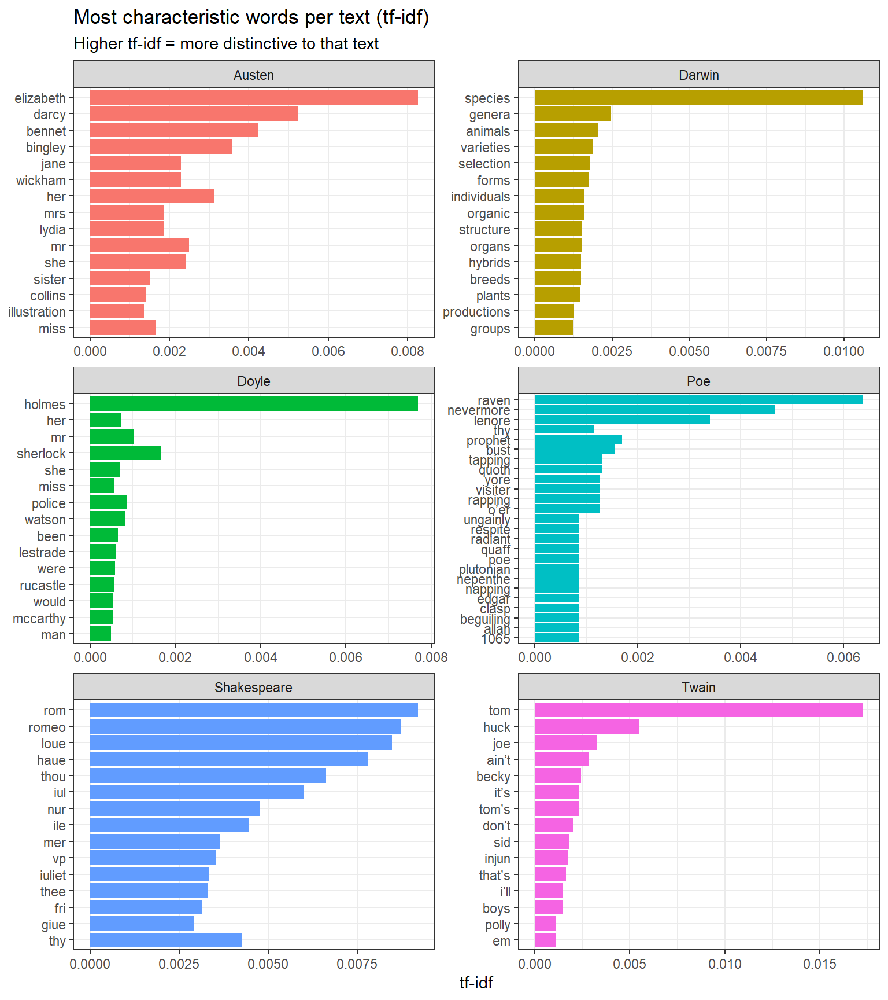
Top 15 words by tf-idf score for each of the six literary texts
The method successfully extracts vocabulary that is highly characteristic of each text: proper nouns (Bennet, Holmes, Juliet), thematic terms (species, selection), and genre-specific vocabulary. Words common to all texts (function words, common verbs) receive near-zero scores and do not appear.
Word-Frequency Distributions and Zipf’s Law
Section Overview
What you will learn: How word-frequency distributions follow a negative exponential (power-law) shape in natural language; how to visualise this distribution; and how to test whether it conforms to Zipf’s Law — a fundamental empirical regularity of human language
Term-Frequency Distributions
Natural language texts show a highly skewed word-frequency distribution: a small number of words occur very frequently, while the vast majority of word types occur only once or twice. This is visible when we plot the normalised term frequency (n / total tokens) for each book:
Code
ggplot(book_words, aes(n / total, fill = book)) +geom_histogram(show.legend =FALSE, bins =40) +xlim(NA, 0.005) +facet_wrap(~ book, ncol =2, scales ="free_y") +theme_bw() +labs(x ="Normalised term frequency (n / total)", y ="Count",title ="Word-frequency distributions show the classic long-tail shape")
Term-frequency distributions for each of the six literary texts
Zipf’s Law
Zipf’s Law(Zipf 1935) is one of the most fundamental empirical laws in linguistics. It states that the frequency of a word is inversely proportional to its rank in a frequency-ordered list: the most common word occurs approximately twice as often as the second most common, three times as often as the third most common, and so on. Formally, if there are N elements and the element of rank k has frequency f(k; s, N):
where s ≈ 1 for most natural language corpora. On a log–log plot this gives a straight line with slope approximately −1.
Code
freq_by_rank <- book_words |> dplyr::group_by(book) |> dplyr::mutate(rank = dplyr::row_number(),term_frequency = n / total ) |> dplyr::ungroup()
Code
freq_by_rank |>ggplot(aes(rank, term_frequency, color = book)) +geom_line(linewidth =0.9, alpha =0.8) +scale_x_log10() +scale_y_log10() +theme_bw() +labs(x ="Rank (log scale)", y ="Term frequency (log scale)",title ="Zipf's Law holds across all six literary texts",subtitle ="Near-linear log–log relationship confirms natural-language origin",color ="Text")
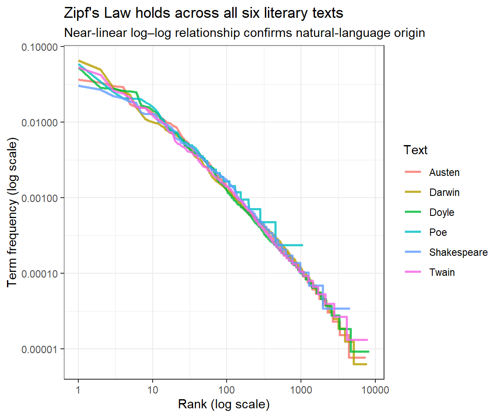
Zipf’s Law: log(rank) vs. log(term frequency) for each literary text
The near-linear log–log relationship confirms that all six texts follow Zipf’s Law — consistent with natural language and inconsistent with random or cipher text. The slight deviations at the very high-frequency end (top-left) and the very low-frequency end (bottom-right) are expected and well-documented in the linguistics literature.
Structural Features: Complexity and Diversity
Section Overview
What you will learn: How to measure lexical diversity (Type-Token Ratio) and average sentence length as indicators of textual complexity; the limitations of the TTR with texts of unequal length; and how to interpret differences in linguistic complexity across authors and genres
Lexical Diversity: Type-Token Ratio
The Type-Token Ratio (TTR) is the number of distinct word forms (types) divided by the total number of word tokens in a text. A text with TTR = 0.5 uses, on average, each word type twice; a text with TTR = 0.8 uses a more varied vocabulary. Higher TTR is associated with:
More advanced or literary language use
More specialised or technical vocabulary
Shorter texts (TTR decreases as text length increases — see the warning below)
quanteda::dfm(tokens_texts) |> quanteda.textstats::textstat_lexdiv(measure ="TTR") |>ggplot(aes(x = TTR, y =reorder(document, TTR))) +geom_point(size =3, color ="steelblue") +geom_segment(aes(xend =0, yend = document), color ="steelblue", alpha =0.4) +theme_bw() +labs(x ="Type-Token Ratio (TTR)", y ="",title ="Lexical diversity across six literary texts",subtitle ="Higher TTR = more varied vocabulary")
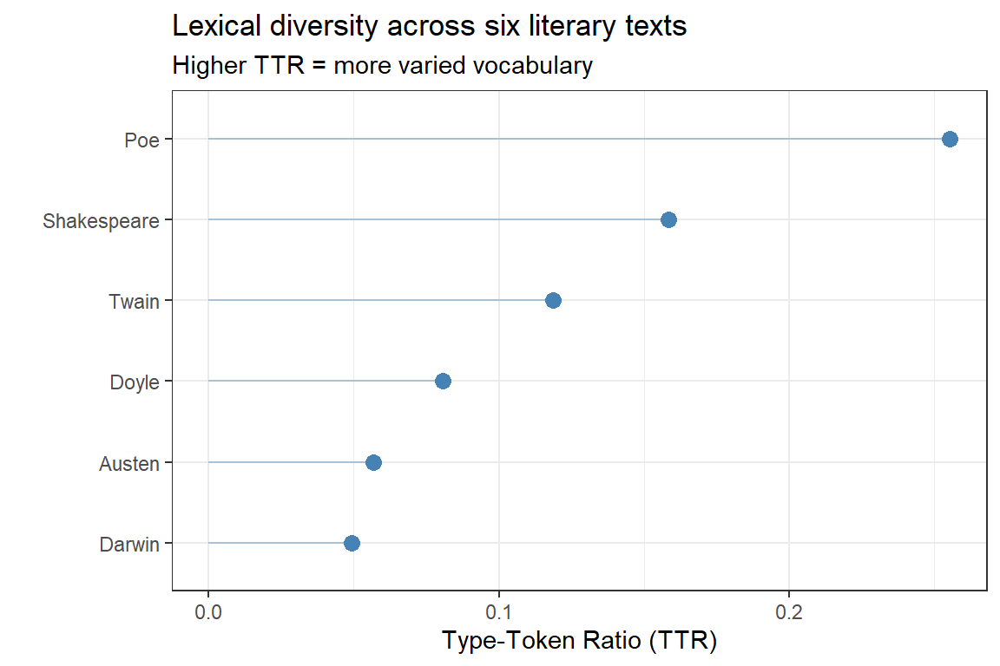
Type-Token Ratio (TTR) for each literary text
TTR Is Sensitive to Text Length
TTR decreases as a text grows longer (because common words accumulate faster than new types). The texts in this corpus differ substantially in length — Poe’s The Raven is a short poem while Darwin’s Origin is a full-length book — which makes direct comparison misleading. TTR comparisons are reliable only for texts of approximately equal length. For cross-length comparisons, use MATTR (Moving Average TTR) or MTLD (Measure of Textual Lexical Diversity), both available via textstat_lexdiv(measure = "MATTR").
Average Sentence Length
The average sentence length (ASL) is a widely used proxy for syntactic complexity. Longer sentences tend to contain more subordination, modification, and embedding, all of which are associated with more formal or complex writing styles.
books_sentences |> dplyr::mutate(sent_length = stringr::str_count(sentence, "\\w+")) |>ggplot(aes(x = sent_length, y =reorder(book, sent_length, mean), group = book)) +stat_summary(fun = mean, geom ="point", size =3, color ="steelblue") +stat_summary(fun.data = mean_cl_boot, geom ="errorbar",width =0.3, color ="steelblue") +theme_bw() +labs(x ="Average Sentence Length (words)", y ="",title ="Average sentence length with 95% bootstrap confidence intervals",subtitle ="Longer sentences indicate more complex, formal prose")
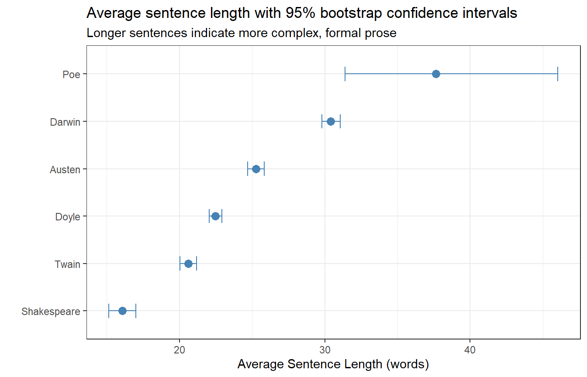
Average sentence length (words) with 95% bootstrap confidence intervals
As expected, Darwin’s scientific prose (On the Origin of Species) has the longest average sentences, reflecting its complex, heavily subordinated academic style. Shakespeare’s Romeo and Juliet has the shortest — reflecting the dominance of short, rapid dialogue exchanges in dramatic texts. Poe’s The Raven is an outlier: lacking standard sentence-ending punctuation, the sentence splitter treats the entire poem as very long “sentences”.
Readability Scores
Section Overview
What you will learn: What readability formulae are and what they measure; how to calculate Flesch Reading Ease and Gunning Fog Index scores for each literary text using syllable and sentence statistics; and how to interpret differences across texts and genres
Key indices:
Index
Formula basis
Interpretation
Flesch Reading Ease
Sentence length + syllables per word
0–100; higher = easier
Gunning Fog
Sentence length + % complex words (≥3 syllables)
Grade level; lower = easier
Readability formulae estimate the educational level or reading ease of a text from surface-level linguistic features — primarily sentence length and word length (syllables or characters). While they do not capture semantic or discourse-level complexity, they provide a fast, reproducible proxy for surface-level linguistic difficulty that is useful for comparisons across genres, time periods, or authors.
Computing Flesch and Fog Scores Manually
Because koRpus requires system-level tokenisation tools that may not be available in all environments, we implement the two most common indices directly from token and syllable statistics. This approach is self-contained and portable.
Code
# Helper: count syllables in a word using a vowel-cluster heuristiccount_syllables <-function(word) { word <-tolower(stringr::str_replace_all(word, "[^a-z]", ""))if (nchar(word) ==0) return(0L)# Count vowel clusters; minimum 1 syllable per non-empty word n <-length(stringr::str_extract_all(word, "[aeiouy]+")[[1]])# Silent trailing 'e': subtract 1 if word ends in a consonant + eif (stringr::str_detect(word, "[^aeiouy]e$")) n <- n -1Las.integer(max(n, 1L))}# Compute readability metrics per bookreadability_df <- books_sentences |> dplyr::mutate(n_words = stringr::str_count(sentence, "\\w+"),# Tokenise and count syllablessyllables = purrr::map_int( stringr::str_extract_all(sentence, "\\b[a-zA-Z]+\\b"),~sum(purrr::map_int(.x, count_syllables)) ),# Complex words: 3+ syllablescomplex_words = purrr::map_int( stringr::str_extract_all(sentence, "\\b[a-zA-Z]+\\b"),~sum(purrr::map_int(.x, count_syllables) >=3L) ) ) |> dplyr::group_by(book) |> dplyr::summarise(n_sentences = dplyr::n(),n_words =sum(n_words),n_syllables =sum(syllables),n_complex =sum(complex_words),avg_sent_len = n_words / n_sentences,avg_syl_per_word = n_syllables / n_words,pct_complex =100* n_complex / n_words,.groups ="drop" ) |> dplyr::mutate(# Flesch Reading Ease (higher = easier; 60–70 = plain English)flesch =206.835-1.015* avg_sent_len -84.6* avg_syl_per_word,# Gunning Fog Index (approximate US grade level required)fog =0.4* (avg_sent_len + pct_complex) )readability_df |> dplyr::select(book, avg_sent_len, avg_syl_per_word, flesch, fog) |> dplyr::arrange(desc(fog))
readability_df |>ggplot(aes(x = flesch, y = fog, label = book, color = book)) +geom_point(size =4) + ggrepel::geom_text_repel(size =3.5, show.legend =FALSE) +theme_bw() +theme(legend.position ="none") +labs(x ="Flesch Reading Ease (higher = easier)",y ="Gunning Fog Index (higher = harder)",title ="Readability: Flesch Reading Ease vs. Gunning Fog",subtitle ="Darwin's scientific prose is the most demanding; Twain the most accessible")
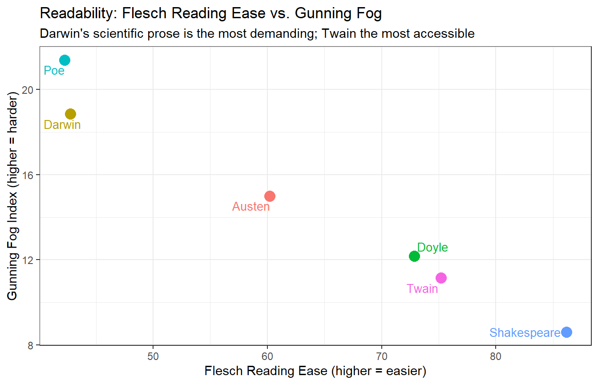
Flesch Reading Ease vs. Gunning Fog Index for each literary text
Darwin’s Origin scores highest on the Fog index and lowest on Flesch Reading Ease, consistent with its long, complex sentences and technical vocabulary. Twain’s Tom Sawyer — conversational, dialogue-heavy, and aimed at a general audience — is the most accessible. Shakespeare and Poe occupy intermediate positions but for different reasons: Shakespeare’s short sentences keep the Fog score moderate despite some archaic vocabulary, while Poe’s short poem has very short “sentences” (by the splitter’s logic) that lower the sentence-length component.
Interpreting Flesch Reading Ease Scores
Score
Reading level
90–100
Very easy — 5th grade
70–90
Easy — 6th grade
60–70
Standard — 7th grade
50–60
Fairly difficult — high school
30–50
Difficult — college level
0–30
Very difficult — professional/academic
Textual Similarity and Clustering
Section Overview
What you will learn: How to represent texts as document-feature matrices; how to compute pairwise textual distances; and how to visualise textual similarity using agglomerative hierarchical clustering and dendrograms
To assess how similar the literary works are to each other based on their vocabulary, we first construct a document-feature matrix (DFM) — a matrix in which rows are documents, columns are word types, and cells contain word frequencies. We remove stop words and punctuation because they occur in all texts and carry little discriminatory information.
Because the texts differ greatly in length, we sample 100 lines from each before constructing the DFM. This equalises the contribution of each text to the distance calculation.
Dendrogram showing textual similarity based on vocabulary (tf-idf weighted DFM)
The dendrogram shows that Doyle’s Sherlock Holmes and Austen’s Pride and Prejudice are the most similar in vocabulary — both are extended prose narratives from roughly the same era. Darwin’s Origin occupies its own branch, reflecting its specialist scientific vocabulary. Poe’s The Raven is consistently the most idiosyncratic, amalgamating with the others only at the root of the tree.
Choosing a Linkage Method
The method argument in hclust() controls how inter-cluster distances are computed. "ward.D2" (Ward’s minimum variance criterion) tends to produce compact, well-separated clusters and is generally preferred for text data. "complete" (maximum linkage) is more conservative; "average" (UPGMA) is a common alternative. Results may differ across methods — reporting which method was used is good practice.
Sentiment Analysis: Narrative Arcs
Section Overview
What you will learn: How to assign sentiment scores to words using the AFINN and NRC lexicons; how to track sentiment across the narrative timeline of a text by dividing it into equal-sized chunks; and how to visualise and interpret sentiment arcs — the rise and fall of emotional tone across a story
Key concept: A sentiment arc plots the aggregate emotional valence of successive text segments, revealing structural patterns such as the classic “hero’s journey” decline-and-recovery arc or the tragedy’s irreversible descent.
Sentiment analysis in literary stylistics goes beyond simply classifying a whole text as positive or negative. By tracking how sentiment evolves across the text, we can reveal narrative structure — the building of tension, emotional peaks and valleys, and the overall emotional trajectory of a work.
Preparing Sentiment Lexicons
We use two widely used sentiment lexicons available via tidytext:
AFINN(Nielsen 2011): assigns each word an integer score from −5 (very negative) to +5 (very positive)
NRC(Mohammad and Turney 2013): assigns words to discrete emotion categories (joy, fear, sadness, anger, anticipation, disgust, surprise, trust) as well as positive/negative polarity
We divide Pride and Prejudice into 80 equal-sized chunks and calculate the mean AFINN score per chunk. This produces a smooth narrative arc that can be compared against the plot structure.
Code
# Number of chunks to divide the text inton_chunks <-80austen_arc <- austen |> dplyr::mutate(line_id = dplyr::row_number()) |> tidytext::unnest_tokens(word, text) |> dplyr::inner_join(afinn, by ="word") |> dplyr::mutate(chunk =cut(line_id,breaks = n_chunks,labels =seq_len(n_chunks))) |> dplyr::group_by(chunk) |> dplyr::summarise(sentiment =mean(value, na.rm =TRUE),.groups ="drop") |> dplyr::mutate(chunk =as.integer(as.character(chunk)))
Code
ggplot(austen_arc, aes(x = chunk, y = sentiment)) +geom_col(aes(fill = sentiment >0), show.legend =FALSE, alpha =0.7) +geom_smooth(method ="loess", se =TRUE, color ="black",linewidth =0.8, span =0.3) +scale_fill_manual(values =c("FALSE"="#d73027", "TRUE"="#4575b4")) +theme_bw() +labs(x ="Narrative position (chunk)",y ="Mean AFINN sentiment",title ="Sentiment arc: Pride and Prejudice",subtitle ="Bars = chunk mean; smoothed line = loess trend (AFINN lexicon)")
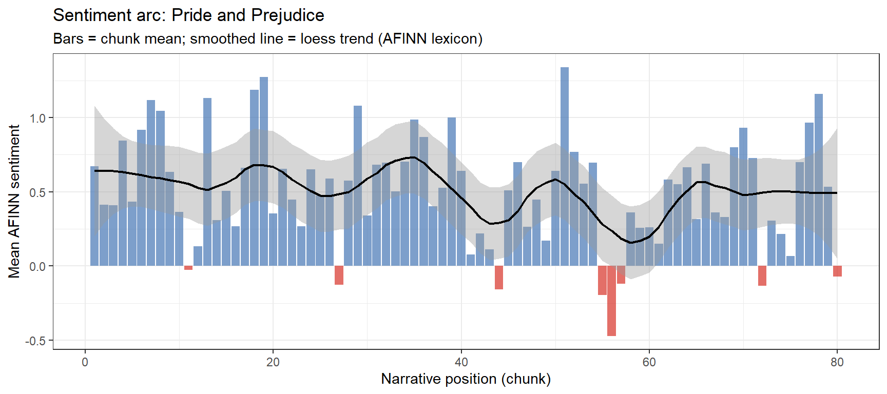
Sentiment arc for Pride and Prejudice (AFINN; 80 narrative chunks)
The arc reveals the classic romantic comedy structure: the middle of the novel contains the most sustained negative sentiment (Darcy’s first disastrous proposal, the Lydia–Wickham elopement crisis), with recovery and positive resolution in the final quarter.
Comparing Sentiment Arcs Across Texts
We now compute sentiment arcs for all six texts using the positive/negative NRC lexicon and plot them together for comparison.
ggplot(all_arcs, aes(x = chunk, y = net, fill = net >0)) +geom_col(show.legend =FALSE, alpha =0.6) +geom_smooth(method ="loess", se =FALSE, color ="black",linewidth =0.7, span =0.4) +scale_fill_manual(values =c("FALSE"="#d73027", "TRUE"="#4575b4")) +facet_wrap(~ book, ncol =2, scales ="free_y") +theme_bw() +labs(x ="Narrative position (chunk)", y ="Net sentiment (pos − neg)",title ="Comparative sentiment arcs across six literary texts",subtitle ="NRC lexicon; 50 equal-sized chunks per text")
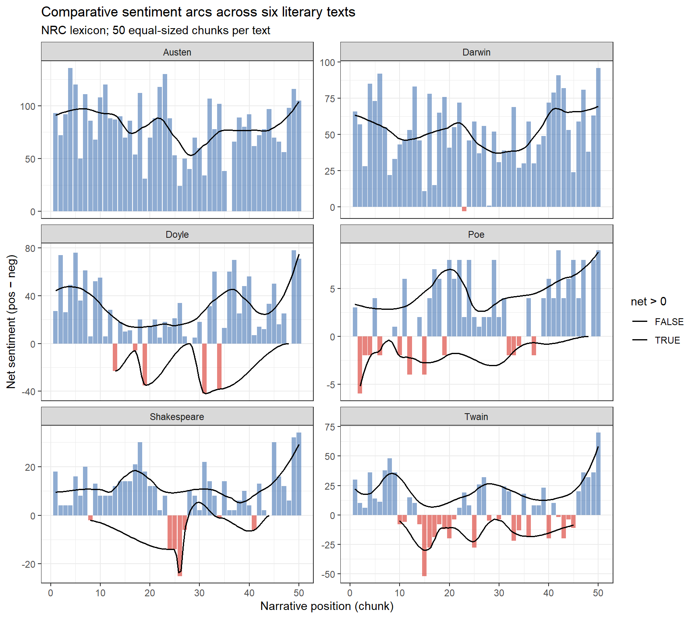
Comparative sentiment arcs for all six literary texts (NRC lexicon; 50 chunks)
The arcs reveal structural differences across genres: Romeo and Juliet shows the characteristic tragic descent, Pride and Prejudice the romantic comedy recovery, and The Adventures of Sherlock Holmes the episodic structure of a short story collection with regular sentiment resets between stories.
Lexicon Choice Matters
Different sentiment lexicons can produce substantially different arcs. AFINN provides graded intensity scores; NRC provides categorical emotions useful for tracking specific emotions (e.g., fear across a horror text). The Bing lexicon (also in tidytext) provides a simple positive/negative binary. For literary work, it is good practice to compare at least two lexicons before drawing conclusions, since all lexicons were originally developed for general or social media text and may not generalise perfectly to historical literary language.
N-gram and Collocation Analysis
Section Overview
What you will learn: How to extract bigrams and trigrams from literary texts; how to filter out stop-word-only n-grams; how to visualise the most frequent multi-word sequences; and how to calculate pointwise mutual information (PMI) to identify statistically significant collocations — word pairs that co-occur more often than chance would predict
Key distinction: A collocation is a word combination that occurs more frequently together than would be expected by chance. The most frequent bigrams are often dominated by stop-word pairs; PMI-based collocations highlight meaningful lexical associations.
bigrams |> dplyr::mutate(bigram =paste(word1, word2)) |> dplyr::group_by(book) |> dplyr::slice_max(n, n =15) |> dplyr::ungroup() |>ggplot(aes(n, forcats::fct_reorder(bigram, n), fill = book)) +geom_col(show.legend =FALSE) +facet_wrap(~ book, ncol =2, scales ="free") +theme_bw() +labs(x ="Frequency", y =NULL,title ="Most frequent content bigrams per text",subtitle ="Stop words removed")
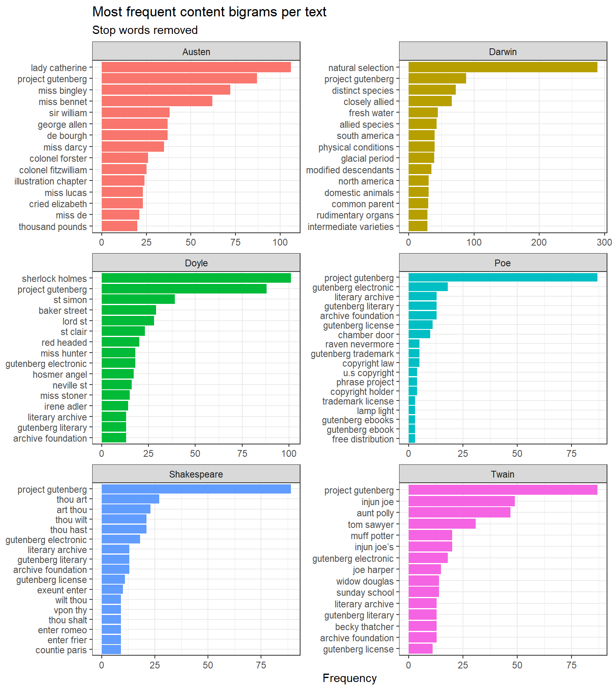
Top 15 content bigrams per text (stop words removed)
Pointwise Mutual Information (PMI) Collocations
PMI measures how much more likely two words are to appear together than if they occurred independently. A high PMI score indicates a strong, statistically unexpected association:
pmi_df |> dplyr::mutate(bigram =paste(word1, word2)) |> dplyr::group_by(book) |> dplyr::slice_max(pmi, n =12) |> dplyr::ungroup() |>ggplot(aes(pmi, forcats::fct_reorder(bigram, pmi), fill = book)) +geom_col(show.legend =FALSE) +facet_wrap(~ book, ncol =2, scales ="free") +theme_bw() +labs(x ="Pointwise Mutual Information (PMI)", y =NULL,title ="Strongest collocations per text (PMI)",subtitle ="min. 5 co-occurrences; stop words removed")
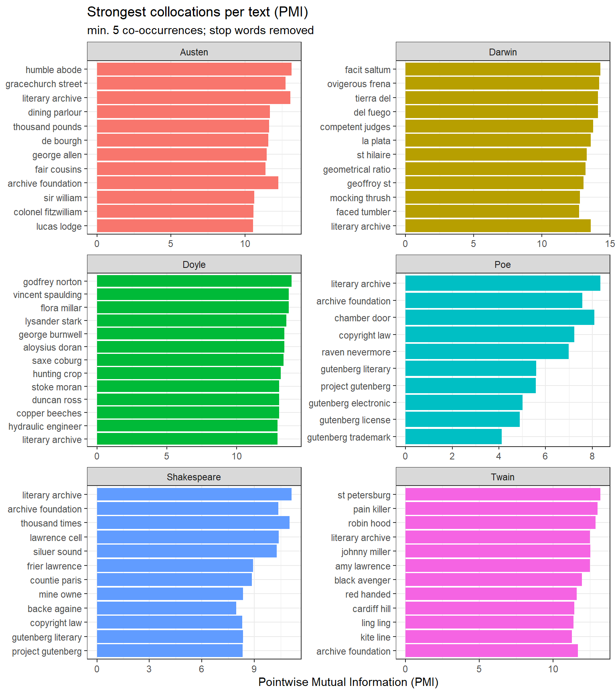
Top PMI collocations per text (min. 5 co-occurrences; stop words removed)
PMI collocations capture meaningful named entities and fixed expressions specific to each text: baker street, natural selection, monte cristo (Doyle), tante belle (Austen’s French phrases). These are more interpretively useful than raw frequency bigrams, which tend to be dominated by common grammatical sequences.
Part-of-Speech Profiling
Section Overview
What you will learn: How to perform part-of-speech (POS) tagging on literary texts using udpipe; how to compute the proportion of nouns, verbs, adjectives, and adverbs in each text; and how to interpret POS profiles as stylistic fingerprints
Key concept: POS ratios are a powerful stylometric feature. Noun-heavy prose tends to be more nominal and formal (scientific writing); verb-heavy prose tends to be more dynamic and narrative; high adjective ratios characterise descriptive or poetic styles (Biber 1995).
Tagging with udpipe
udpipe provides fast, accurate POS tagging using Universal Dependencies models. We first download the English model (this is a one-time operation):
Code
# Run once to download the English UD modeludpipe::udpipe_download_model(language ="english")
Code
# Load model (adjust path if needed)ud_model <- udpipe::udpipe_load_model(here::here("udpipemodels", "english-ewt-ud-2.5-191206.udpipe"))# Sample 500 lines per book for speedset.seed(2026)books_sample <- books |> dplyr::group_by(book) |> dplyr::slice_sample(n =500) |> dplyr::summarise(text =paste(text, collapse =" "), .groups ="drop")# Tag each textpos_tagged <- purrr::map2_dfr( books_sample$text, books_sample$book,function(txt, nm) { udpipe::udpipe_annotate(ud_model, x = txt, doc_id = nm) |>as.data.frame(detailed =FALSE) |> dplyr::mutate(book = nm) })
POS Profiles
Code
# Focus on the four main open-class POS categoriespos_focus <-c("NOUN", "VERB", "ADJ", "ADV")pos_summary <- pos_tagged |> dplyr::filter(upos %in% pos_focus) |> dplyr::count(book, upos) |> dplyr::group_by(book) |> dplyr::mutate(prop = n /sum(n)) |> dplyr::ungroup()
Code
pos_summary |>ggplot(aes(x = book, y = prop, fill = upos)) +geom_col(position ="dodge") +scale_fill_brewer(palette ="Set2") +theme_bw() +theme(axis.text.x =element_text(angle =30, hjust =1)) +labs(x ="", y ="Proportion of open-class tokens",fill ="POS",title ="Part-of-speech profiles across six literary texts",subtitle ="Proportions among NOUN / VERB / ADJ / ADV tokens only")
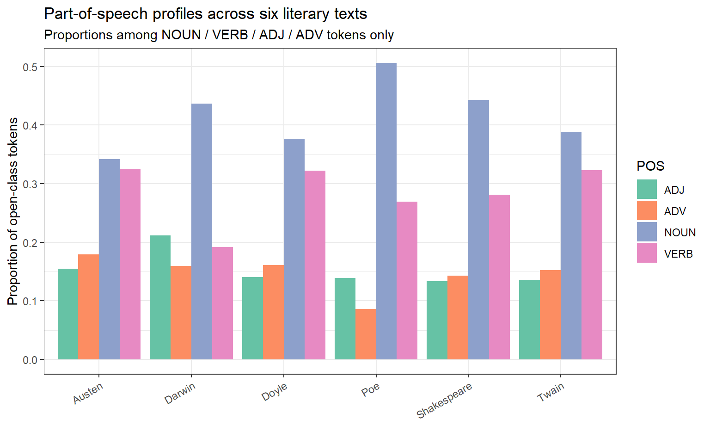
Part-of-speech profiles: proportion of nouns, verbs, adjectives, and adverbs per text
Code
pos_wide <- pos_summary |> dplyr::select(book, upos, prop) |> tidyr::pivot_wider(names_from = upos, values_from = prop, values_fill =0)# Heatmap as an alternative to radar that renders reliably in HTMLpos_long <- pos_wide |> tidyr::pivot_longer(-book, names_to ="POS", values_to ="prop")ggplot(pos_long, aes(x = POS, y = book, fill = prop)) +geom_tile(color ="white", linewidth =0.5) +geom_text(aes(label = scales::percent(prop, accuracy =0.1)),size =3.2) +scale_fill_distiller(palette ="Blues", direction =1) +theme_bw() +theme(legend.position ="right") +labs(x ="Part of Speech", y ="",fill ="Proportion",title ="POS heatmap: stylometric fingerprints",subtitle ="Each cell = proportion of that POS among open-class tokens")
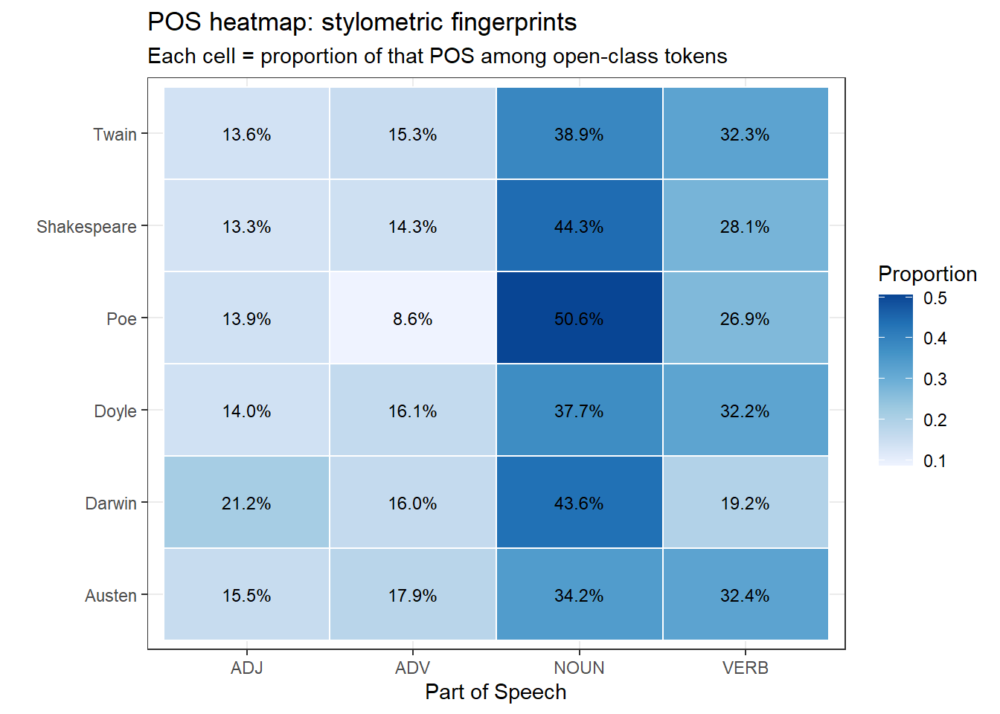
POS ratios as a stylometric fingerprint (radar/spider chart)
Darwin’s Origin shows the highest noun ratio — typical of scientific writing, which packs information into noun phrases. Shakespeare’s Romeo and Juliet has the highest verb ratio, reflecting the dynamism of dramatic dialogue. Poe’s The Raven has the highest adjective proportion, consistent with its heavily atmospheric, descriptive poetic style.
POS Ratios as Stylometric Features
POS ratios derived from a single work can be compared across an author’s corpus to track stylistic change over time, or used as features in a machine learning classifier to distinguish authors or genres. They are relatively robust to topic and lexical choice, making them useful cross-domain stylometric features (Biber 1995).
Stylometric Authorship Attribution
Section Overview
What you will learn: The logic of stylometry — using statistical patterns in function-word frequency to infer authorship; how Burrows’s Delta measures stylometric distance between texts; and how Principal Component Analysis (PCA) reduces the high-dimensional function-word space to two dimensions for visualisation
Key concept: Authorship attribution rests on the observation that authors have distinctive, largely unconscious preferences in their use of function words (the, of, and, to, in, …). These preferences are stable across genres and topics, making them reliable authorial “fingerprints” (Burrows 2002).
Preparing the Function-Word Matrix
We use the 200 most frequent words in the combined corpus as features — a standard approach in stylometry that captures predominantly function words.
Code
set.seed(2026)# Sample equal-length chunks: 3 chunks of 1000 lines per bookchunk_size <-1000books_chunked <- books |> dplyr::group_by(book) |> dplyr::mutate(chunk_id =ceiling(dplyr::row_number() / chunk_size)) |> dplyr::filter(chunk_id <=3) |># keep at most 3 chunks per book dplyr::mutate(doc_id =paste0(book, "_chunk", chunk_id) ) |> dplyr::ungroup()# Build DFM with relative term frequenciesstylo_dfm <- books_chunked |> dplyr::group_by(doc_id) |> dplyr::summarise(text =paste(text, collapse =" "), .groups ="drop") |> quanteda::corpus(text_field ="text", docid_field ="doc_id") |> quanteda::tokens(remove_punct =TRUE, remove_numbers =TRUE) |> quanteda::tokens_tolower() |> quanteda::dfm() |> quanteda::dfm_weight(scheme ="prop") # relative frequencies# Keep top 200 features (mostly function words)stylo_dfm_top <- quanteda::dfm_select( stylo_dfm,pattern = quanteda::featnames( quanteda::dfm_sort(stylo_dfm, decreasing =TRUE) )[1:200])
Burrows’s Delta
Burrows’s Delta is computed as the mean of the absolute z-scored differences in feature frequencies between two texts. We calculate pairwise Delta distances for all document chunks and visualise them as a heatmap:
Burrows’s Delta pairwise distances between text chunks (lower = more similar)
PCA of Function-Word Frequencies
PCA reduces the 200-dimensional function-word space to the two principal components that explain the most variance, allowing us to visualise how the text chunks cluster stylistically:
ggplot(pca_df, aes(x = PC1, y = PC2, color = author, label = doc_id)) +geom_point(size =4, alpha =0.8) + ggrepel::geom_text_repel(size =2.8, show.legend =FALSE) +stat_ellipse(aes(group = author), type ="norm", linetype =2,linewidth =0.5) +theme_bw() +labs(x =paste0("PC1 (", pct_var[1], "% variance)"),y =paste0("PC2 (", pct_var[2], "% variance)"),color ="Author",title ="Stylometric PCA: function-word profiles",subtitle ="Chunks from the same author should cluster; ellipses = 95% normal")
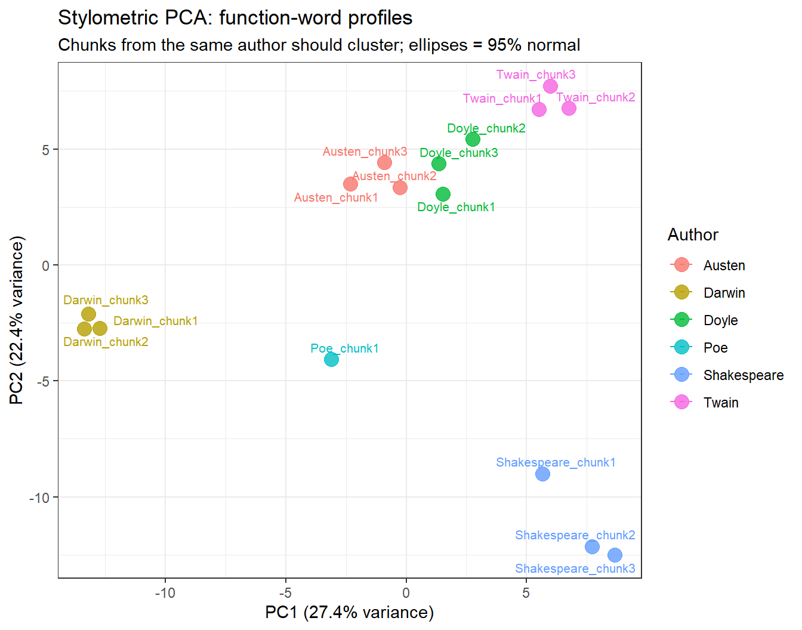
PCA of 200 most frequent words: stylometric fingerprints of six authors
In a successful attribution, chunks from the same author cluster together in PCA space. Darwin typically occupies an isolated position (driven by unique scientific function-word patterns), while the Victorian prose authors (Doyle, Austen) may overlap, reflecting shared stylistic conventions.
The stylo Package
For production-grade stylometric analysis — including Consensus Trees, Rolling Delta, and Craig’s Zeta — the dedicated stylo package (Eder, Rybicki, and Kestemont 2016) provides a comprehensive GUI and scripting interface. The present section demonstrates the underlying principles using base R and quanteda for transparency and reproducibility.
Character Co-occurrence Networks
Section Overview
What you will learn: How to represent character co-occurrence data as a feature co-occurrence matrix (FCM); how to visualise character networks using quanteda.textplots; and how to interpret network topology in terms of narrative centrality and character relationships
Character networks represent the social structure of a play or novel by connecting characters who appear together in the same scene, chapter, or passage. The thickness of the connection indicates how often two characters co-occur, while the position in the graph reflects centrality — characters with many strong connections appear at the centre.
We load a pre-computed co-occurrence matrix for Romeo and Juliet in which cells represent the number of scenes in which two characters appear together:
Character co-occurrence network for Romeo and Juliet (edge thickness = co-occurrence frequency)
Romeo and Juliet are — as expected — the most central nodes, connected to most other characters and to each other. The Nurse and Friar Laurence form a secondary hub as the go-betweens. The Montague and Capulet servants cluster on the periphery, connected to their respective families but not to the opposite household.
Extending Network Analysis
Character networks can be extended in several directions:
Weighted edges based on dialogue turns or lines shared, not just scene co-occurrence
Dynamic networks that track how the network structure changes across acts
Network metrics — degree centrality, betweenness, clustering coefficient — to quantify character importance
Cross-play comparison: constructing the same network for multiple Shakespeare plays and comparing structural properties
Martin Schweinberger. 2026. Computational Literary Stylistics with R. The Language Technology and Data Analysis Laboratory (LADAL), The University of Queensland, Australia. url: https://ladal.edu.au/tutorials/litsty/litsty.html (Version 3.1.1). doi: 10.5281/zenodo.19332904.
@manual{martinschweinberger2026computational,
author = {Martin Schweinberger},
title = {Computational Literary Stylistics with R},
year = {2026},
note = {https://ladal.edu.au/tutorials/litsty/litsty.html},
organization = {The Language Technology and Data Analysis Laboratory (LADAL), The University of Queensland, Australia},
edition = {3.1.1}
doi = {10.5281/zenodo.19332904}
}
This tutorial was re-developed with the assistance of Claude (claude.ai), a large language model created by Anthropic. Claude was used to help revise the tutorial text, structure the instructional content, generate the R code examples, and write the checkdown quiz questions and feedback strings. All content was reviewed, edited, and approved by the author (Martin Schweinberger), who takes full responsibility for the accuracy and pedagogical appropriateness of the material. The use of AI assistance is disclosed here in the interest of transparency and in accordance with emerging best practices for AI-assisted academic content creation.
Biber, Douglas. 1995. Dimensions of Register Variation: A Cross-Linguistic Comparison. Cambridge University Press.
Burrows, John. 2002. “‘Delta’: A Measure of Stylistic Difference and a Guide to Likely Authorship.”Literary and Linguistic Computing 17 (3): 267–87.
Eder, Maciej, Jan Rybicki, and Mike Kestemont. 2016. “Stylometry with r: A Package for Computational Text Analysis.”
Mohammad, Saif M, and Peter D Turney. 2013. “Crowdsourcing a Word-Emotion Association Lexicon.”Computational Intelligence 29 (3): 436–65. https://doi.org/https://doi.org/10.1111/j.1467-8640.2012.00460.x.
Nielsen, Finn Årup. 2011. “A New ANEW: Evaluation of a Word List for Sentiment Analysis in Microblogs.”arXiv Preprint arXiv:1103.2903.
Silge, Julia, David Robinson, and David Robinson. 2017. Text Mining with r: A Tidy Approach. O’reilly Boston (MA).